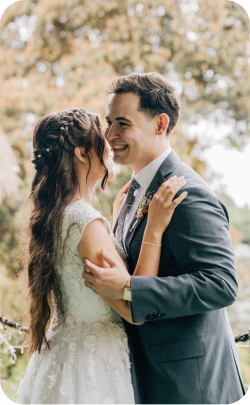

Hello. I'm
ANDRÉ LUZ
a front-end developer
Who am I?

Desenvolvedor front-end e apaixonado por tecnologia, sou um constante aprendiz e fascinado em contribuir para o desenvolvimento de pessoas, proporcionando melhoria de negócios.
Nascido em São Paulo, Brasil, meu primeiro contato com sistemas foi em 2015, desde então procuro por conhecimento na área. Fui voluntário ajudando comunidades por dois anos onde desenvolvi a comunicação, liderança e gestão de projetos envolvendo pessoas.
Formado em 2023 em Análise e Desenvolvimento de Sistemas pela FIAP (Faculdade de Informática e Administração Paulista) me aventuro hoje em ser e fazer acontecer a tecnologia para todos.